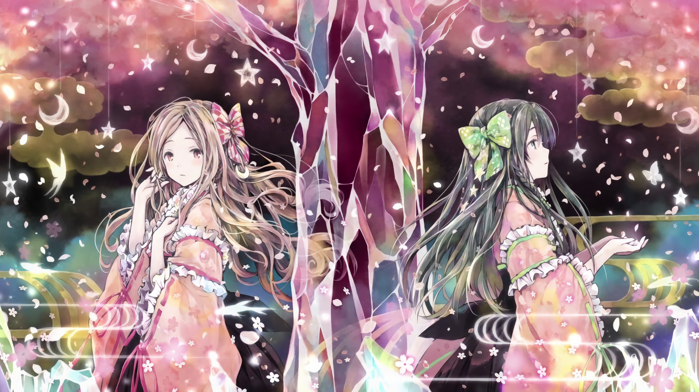
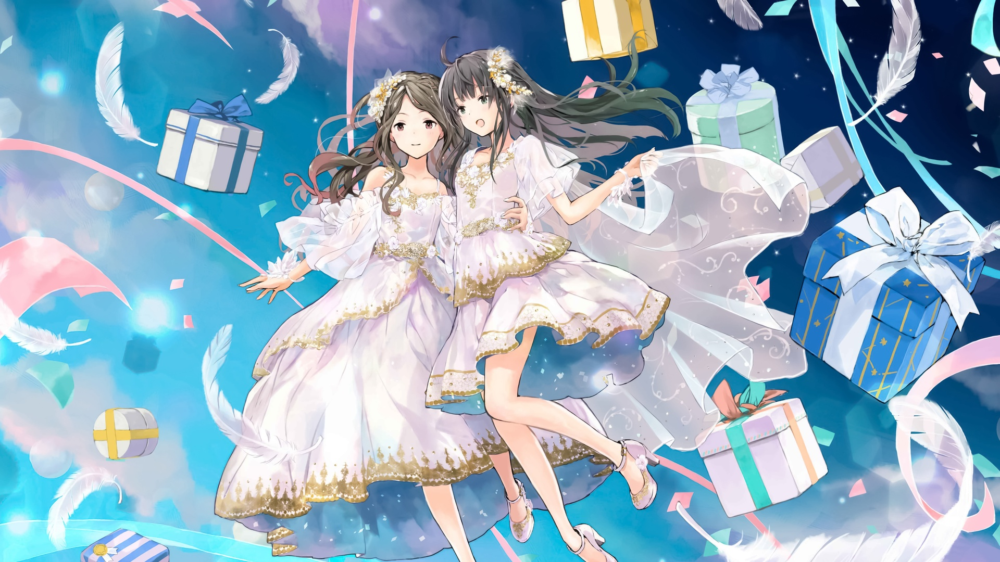

1 / 3

Visual
2 / 3

10th Anniversary Illustration
3 / 3

The First Take [Connect]
Clara is associated with the moon and rabbit as her character image. Her image color is Pastel Pink. Her special skills including piano and sweets making. She is not good with reptiles and is sometimes referred to as a rain woman, but actually isn't so as it is often sunny when she is on private trips. Clara often listens to Hatsune Miku, Ikimonogakari, and YUI songs. She has been attending music school since kindergarten, and from that time she wanted to be a singer. She thought it was fate when Alice later enrolled in the same music school and the two of them met. Both of them never imagined their debut and realized that it was the first song they made when their name came out on credit. Clara has a wide vocal range and can handle both high and low tones with a clear voice.
Karen is associated with the star and cat as her character image. Her image color is Pastel Green. She is a classmate of the same music school as Clara, and both started to exchange contact after co-starring on the same stage. After the graduation of Alice, she was nominated for ClariS and decided to join because she was acquainted with Clara's practice alone. She has been longing for the entertainment world, and respected actress Karina and Nakama Yukie. Prior to joining ClariS, Karen was collecting CDs as a fan as she longing for their cute songs and illustrations. She once said that on a day when she was watching a music program, she knew that "irony" was sung by active junior high school students, and by the time it was when her dream wasn't clear yet, she was really inspired as she thought that there are people in her age who are fulfilling their dreams, so she has to face herself properly. Karen is good at dancing and has performed tap dance live. She is fear of heights and not good with lightning.
Alice is associated with the sun as her image character. Her image color is Blue. Her specialty is skiing. She often listens to Hatsune Miku and Ayaka's songs. She admires Amuro Namie. She likes Disneyland and dreamt of singing at Disneyland. When in kindergarten, she longed for "Ojamajo Doremi" and her favorite is Hana-chan. Alice started attending music school because impressed by Amuro Namie's dancing she saw on TV. There, Clara called her out and they became friends. She said that it was like a dream for kz to produce the original song "DROP / Kimi no Yume wo Miyou". Alice graduated from ClariS on June 4, 2014, to pursue her education.